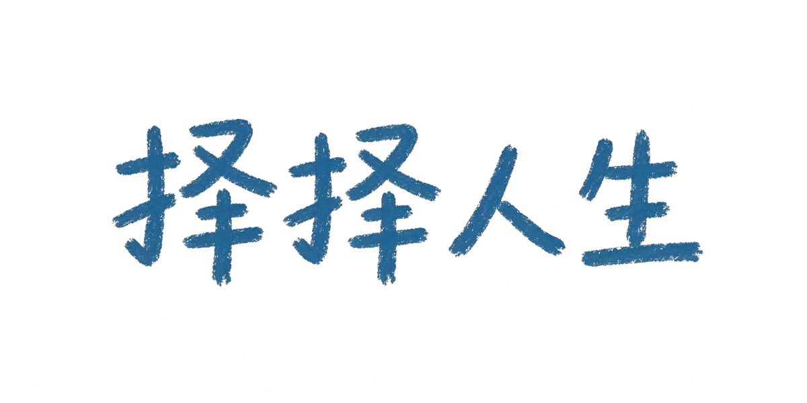
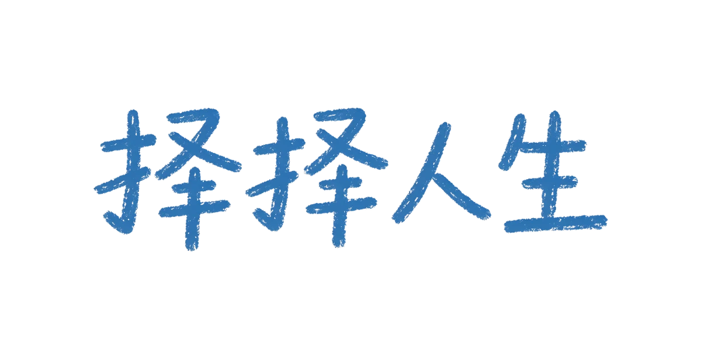

贴纸主图候选（蜡笔杂货皮肤 · 系统小人）
同一张已定稿的彩铅妹妹参考图抽的三张。看：圈线是否完整、角色占比与留白、44px 停靠态是否可辨、奶油纸/深蓝纸上是否都好看。拍板后我再以选中的那张为基准做眨眼/开心/低落表情帧。
奶油纸（crayon 亮档）
1 号 · 构图偏满 200 / 60 / 44px
200 / 60 / 44px
2 号 · 留白最透气 ★推荐 200 / 60 / 44px
200 / 60 / 44px
3 号 · 构图偏满 200 / 60 / 44px
200 / 60 / 44px
同一张已定稿的彩铅妹妹参考图抽的三张。看：圈线是否完整、角色占比与留白、44px 停靠态是否可辨、奶油纸/深蓝纸上是否都好看。拍板后我再以选中的那张为基准做眨眼/开心/低落表情帧。
上排＝生成原图（奶油底）；下排＝已抠透明底的成品效果。逐字核对四个字，接受就更名触点全部换图。1 号更工整，2 号更稚拙。



